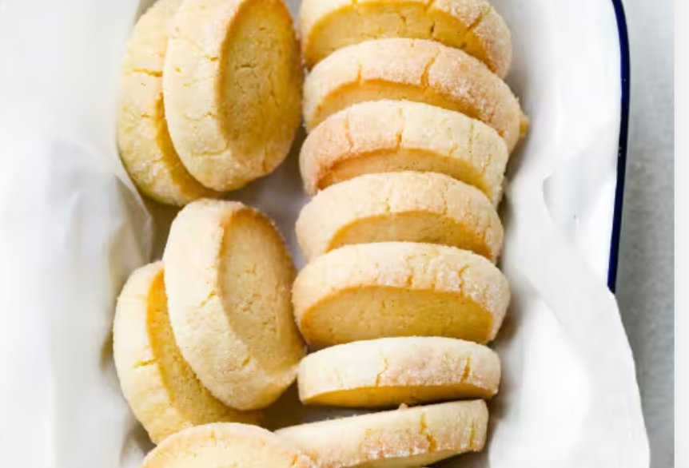

Sablés diamant à la vanille
Ingrédients
25×
- 1 gousse de vanille
- 150 g de beurre mou
- 100 g de sucre
- 250 g de farine
- 1 pincée de fleur de sel
- 2 jaunes d'œufs
- sucre cristal

Préparation
Étape 1
Mettre les graines d’1 gousse de vanille, 150 g de beurre mou en morceaux et 100 g de sucre dans le bol. Mélanger 30 sec/vitesse 4.
Étape 2
Ajouter 250 g de farine, 1 pincée de fleur de sel et 2 jaunes d'œufs. Mélanger 35 sec/vitesse 5.
Étape 3
Former 2 boudins de 4cm de diamètre, filmer et laisser reposer 30min au congélateur.
Étape 4
Préchauffer le four à 180ºC.
Étape 5
Rouler les boudins dans du sucre cristal. Les découper en palets de 1cm et les disposer sur une plaque recouverte de papier cuisson.
Étape 6
Enfourner à mi-hauteur 15min.
Résumé
1 gousse de vanille
150 g de beurre mou
100 g de sucre
Mélanger 30 sec/vitesse 4
250 g de farine
1 pincée de fleur de sel
2 jaunes d'œufs
Mélanger 35 sec/vitesse 5
Former 2 boudins laisser reposer 30min
Préchauffer 180ºC
sucre cristal
Rouler les boudins découper en palets
Enfourner